메트릭으로 이상을 찾고,
로그로 원인을 찾는다
쿠버네티스에서 메트릭과 로그를 모으고, 보고, 알림으로 받는 방법.
일곱 장에 걸쳐 메트릭 → 알림 → 로그 순서로 간다
| 장 | 주제 | 책 | 끝나면 할 수 있는 것 | 슬라이드 |
|---|---|---|---|---|
| 01 | 무엇을 측정하고, 어떤 기준으로 읽을 것인가 | 3.1 ~ 3.3 | USE · RED로 무엇을 볼지 정한다 | 9~19 |
| 02 | 쿠버네티스 메트릭은 누가 만드는가 | 3.4 ~ 3.5 | 메트릭 출처 세 곳을 메트릭 이름으로 구분한다 | 20~29 |
| 03 | 메트릭을 모으는 도구와 프로메테우스의 동작 방식 | 3.6 ~ 3.7 | pull 방식과 스택 구성요소의 역할을 짚는다 | 30~40 |
| 04 | 스택을 설치하고, 정상인 화면을 읽는다 | 3.7 | 타깃 28/28 up을 확인하고 질문별로 화면을 고른다 | 41~50 |
| 05 | 앱을 연결하고 PromQL로 RED를 읽는다 | 3.12.1 | ServiceMonitor로 앱을 붙이고 RED를 분위수 · 라벨로 읽는다 | 51~58 |
| 06 | 규칙을 만들고, 알림을 실제로 받는다 | 3.11 · 3.12.3 | 알림이 수신처에 도착하고 해소되는 것을 확인한다 | 59~71 |
| 07 | 로그를 모으고, LogQL로 원인을 찾는다 | 3.8 ~ 3.10 | LogQL로 500 에러가 난 요청을 찾는다 | 72~83 |
실습 파일을 받고 도구 6개를 설치한다
kubernetes/monitoring-logging · 이후 모든 명령을 이 폴더에서 친다DockerDocker Desktop 또는 OrbStack 앱을 먼저 실행해 둔다# 터미널에서 · ① 실습 파일 받기 git clone https://github.com/claude-code-expert/kubernetes.git cd kubernetes/monitoring-logging # ② 도구 설치 (macOS · Homebrew, 없으면 먼저 brew.sh) brew install --cask docker # 또는 --cask orbstack brew install kind helm kubernetes-cli k6 jq # ③ 설치 확인: 여섯 줄 모두 버전이 나오면 된다 docker version --format 'Client {{.Client.Version}} / Server {{.Server.Version}}' kind version kubectl version --client helm version --short k6 version jq --version # ④ Docker 자원 확인 docker info --format '{{.NCPU}} CPU, {{.MemTotal}} bytes'
| 도구 · 쓰는 곳 | ③에서 볼 것 |
|---|---|
| Docker kind 노드 · 이미지 빌드 | Server 버전까지 나온다Cannot connect to the Docker daemon이면 앱을 실행한다 |
| kind 로컬 클러스터 | kind v0.33.0 |
| kubectl 클러스터 조작 | Client Version: v1.37.x |
| Helm 스택 · Loki · Alloy 설치 | v4.x |
| k6 부하 생성 | k6 v2.x |
| jq API 응답(JSON) 읽기 | jq-1.x |
"주문이 느려요"라는 제보 한 건을 끝까지 따라간다
P99 790ms.
평균 45ms만 보면 멀쩡해 보였다
URI별로 나눠 보니
/api/chaos/slow만 805ms
AppHighErrorRate 발화
"order-api 에러율 5.9%"
알림이 난 시각의 로그에서
실패한 요청을 찾는다
가장 느린 1% 요청의 경계값
요청 100건을 빠른 순으로 줄 세웠을 때 99번째 요청의 응답 시간. "P99 790ms"는 99%는 790ms 안에 끝났고, 가장 느린 1%는 그보다 오래 걸렸다는 뜻이다. 평균이 가리는 느린 요청을 드러낸다.
AppHighErrorRate가 "발화"했다
AppHighErrorRate는 우리가 정의한 알림 규칙의 이름이다. 조건은 "5xx(서버 오류) 응답 비율이 5%를 넘는 상태가 2분 이상 지속". 조건이 충족되면 규칙이 firing(발화) 상태가 되고 Alertmanager가 담당자에게 알림을 보낸다.
메트릭과 로그는 수집 경로가 다르고, 보는 화면은 하나다
TSDB(Time Series Database · 시계열 데이터베이스): 값을 측정 시각과 한 쌍으로 묶어 메트릭 이름·라벨별로 시간 순서대로 쌓는 저장소. 프로메테우스에 내장되어 있다.
프로메테우스는 대상에서 메트릭을 가져와 시간 순으로 저장한다
| 용어 | 원어 · 풀 네임 | 뜻 |
|---|---|---|
| 스크레이프 | Scrape | 프로메테우스가 대상의 HTTP 주소(/metrics 등)에 주기적으로 요청해 그 순간의 메트릭 값을 가져가는 동작. 실습 주기는 30초 |
| 풀 방식 | Pull model | 수집기가 대상에 요청해서 가져온다. 반대는 대상이 수집기로 밀어 넣는 푸시(Push) 방식 |
| 타깃 | Target | 스크레이프할 대상 하나(주소 + 경로). 쿠버네티스에서는 라벨로 자동 발견한다. 같은 목적의 타깃 묶음은 잡(Job) |
| Prometheus | 프로메테우스 · CNCF(Cloud Native Computing Foundation) 졸업 프로젝트 | 메트릭을 수집 · 저장 · 질의하고 알림 규칙을 평가하는 모니터링 시스템 |
| TSDB | Time Series Database · 시계열 데이터베이스 | (시각, 값) 쌍을 메트릭 이름 + 라벨별로 저장하는 DB. 프로메테우스는 자기 로컬 디스크에 2시간 단위 블록으로 쌓고, 보존 기한(실습: 3일 또는 4GB)이 지나면 지운다 |
Alloy가 로그를 수집해 보내고, Loki가 저장하고 조회한다
| 용어 | 원어 · 풀 네임 | 뜻 |
|---|---|---|
| stdout · stderr | Standard output · Standard error (표준 출력 · 표준 에러) | 프로그램이 출력을 내보내는 기본 통로. 컨테이너가 여기로 쓴 줄을 런타임이 노드의 /var/log/pods 아래 파일로 남긴다 |
| Alloy | Grafana Alloy · 그라파나 랩스의 수집 에이전트 | OpenTelemetry Collector 배포판에 프로메테우스 파이프라인을 내장한 수집기. 파드 로그를 읽어 라벨을 붙이고 Loki로 보낸다 |
| Loki | Grafana Loki · 로그 집계 시스템 | 로그를 저장하고 조회한다. 로그 본문은 색인하지 않고 라벨만 색인하며, 본문은 압축 덩어리(chunk)로 저장한다. 색인이 작아 저장 비용이 낮다 |
| 로그 스트림 | Log stream | 라벨이 모두 같은 로그 줄의 묶음. Loki는 먼저 라벨로 스트림을 고르고, 그 안의 로그만 검색한다 |
메트릭을 제공하는 구성요소와 시각화·알림 도구
무엇을 측정하고, 어떤 기준으로 읽을 것인가
도구를 설치하기 전에 신호의 종류를 나누고, 신호를 읽는 방법론 두 가지(USE, RED)를 정한다.
용어 ① 관측 데이터와 관찰 방식
| 용어 | 원어 · 풀 네임 | 뜻 |
|---|---|---|
| 신호 | Signal · 텔레메트리(Telemetry) | 시스템 상태를 알려 주려고 밖으로 내보내는 데이터. 메트릭·로그·트레이스 세 종류 |
| 메트릭 | Metric | 정해진 시점마다 잰 수치. 예: 요청 수 누계 12,408 |
| 로그 | Log | 실행 중 일어난 사건 하나를 적은 텍스트 줄 |
| 시계열 | Time series | 같은 이름·같은 라벨의 값을 시간 순으로 늘어놓은 것 |
| 라벨 | Label | 메트릭에 붙는 키=값 쌍. 값을 나눠 볼 기준이 된다. 예: uri="/api/orders" |
| 트레이스 | Trace | 요청 하나가 서비스들을 거친 경로와 구간별 시간 |
| 관측 가능성 | Observability | 밖으로 나온 신호만으로 내부 상태를 추론할 수 있는 정도 |
| 폐쇄형 모니터링 | Closed-box (SRE: Black-box) | 밖에서 사용자처럼 요청을 보내 겉으로 보이는 동작만 확인 |
| 개방형 모니터링 | Open-box (SRE: White-box) | 시스템이 제공하는 내부 수치(요청·에러·지연)로 원인을 추적 |
용어 ② 방법론과 지표
| 용어 | 원어 · 풀 네임 | 뜻 |
|---|---|---|
| USE | Utilization · Saturation · Errors | 자원마다 사용률·포화도·에러 수를 본다. 브렌던 그레그 제안, 인프라용 |
| RED | Rate · Errors · Duration | 서비스마다 처리율·에러 수·처리 시간을 본다. 톰 윌키가 2015년 제안, 서비스용 |
| SRE | Site Reliability Engineering | 사이트 신뢰성 엔지니어링. 운영을 소프트웨어 공학으로 다루는 방법론 |
| SLO | Service Level Objective | 서비스 수준 목표. "요청의 99%가 300ms 안에" 같은 약속 |
| SLI | Service Level Indicator | 서비스 수준 지표. SLO 달성 여부를 판정하려고 재는 값. 예: 300ms 안에 끝난 요청 비율 |
| 레이턴시 | Latency | 요청 하나를 처리하는 데 걸린 시간(지연 시간) |
| 백분위수 | Percentile · P50 / P95 / P99 | P는 Percentile(백분위수). P99 = 가장 느린 1%를 뺀 나머지가 모두 이 값 이하. P50은 중앙값 |
| 히스토그램 | Histogram | 값을 구간(버킷)별로 측정한 분포. 백분위수를 계산하는 데 쓴다 |
메트릭은 횟수와 수치를, 로그는 사건의 내용을 알려 준다
정해진 기간에 측정한 수치
http_server_requests_seconds_count{
uri="/api/orders", status="500"} 731
크기가 작아 오래 보관하고 빠르게 집계할 수 있다. 대신 개별 요청의 정보는 숫자로 합쳐지면서 사라진다.
실행 중 일어난 사건의 기록
10.244.1.1 - - [05/Sep/2026:13:52:10 +0000] "GET /api/chaos/error HTTP/1.1" 500 15 3
요청마다 어느 경로가 언제, 얼마나 걸려 실패했는지 남는다. 대신 양이 많아 저장 비용이 크고, 개수를 세려면 전부 읽어야 한다.
메트릭으로 시간과 대상을 좁힌 뒤 로그를 본다
① 메트릭으로 이상을 발견한다
에러율이 5.9%로 올랐다. 언제부터인지, 어느 앱의 어느 uri인지 라벨로 나눠 본다.
② 같은 시간·라벨로 로그를 조회한다
시간 범위(22:03~22:06)와 라벨(namespace=apps, app=order-api)을 로그 조회 조건에 그대로 쓴다.
③ 로그에서 원인을 확인한다
좁혀진 수백 줄에서 어느 경로가 어떤 상태 코드로, 얼마 만에 실패했는지 확인한다.
밖에서 증상을 보고, 안에서 원인을 본다
파드는 VM처럼 고정된 대상으로 모니터링할 수 없다
| 항목 | 24/7 가동 VM | 쿠버네티스 파드 |
|---|---|---|
| 수명 | 몇 달~몇 년 | 배포·축소·장애 때마다 교체. 수명이 짧다(transient) |
| 주소·이름 | 고정 IP · 호스트명 | 교체될 때마다 새 IP · 새 접미사(order-api-7c9…-x2kqp) |
| 감시 대상 등록 | 사람이 목록에 적는다 | API 서버에서 라벨로 자동으로 찾는다(서비스 디스커버리) |
| 기록 | 호스트 디스크에 남는다 | 파드가 지워지면 그 컨테이너 로그도 노드에서 지워진다 |
| kubectl top | 해당 없음 | metrics-server는 메모리에 있는 최근값만 보여 준다. 한 시간 전 값은 없다 |
USE: 모든 자원의 사용률·포화도·에러를 본다
사용률
자원이 일을 처리하느라 바빴던 시간의 평균 비율. 예: CPU 70%, 링크 대역폭의 40%.
포화도
처리하지 못하고 쌓여 있는 작업의 양. 주로 대기열(queue) 길이로 나타난다.
에러 수
에러 이벤트 횟수. 해석이 쉬워서 먼저 확인하면 시간이 절약된다.
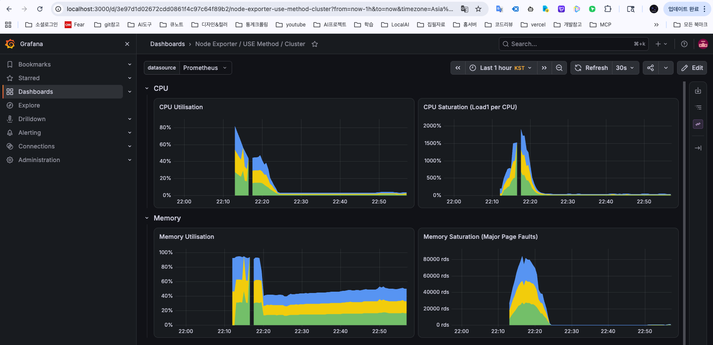
사용자가 겪는 문제는 RED로 발견하고, 원인은 USE로 찾는다
RED = 서비스마다 Rate(초당 요청 수) · Errors(실패한 요청 수) · Duration(처리 시간 분포)를 본다. 모든 서비스를 같은 세 지표로 재면 대시보드 하나로 비교할 수 있다
실행 대기 줄 = run queue · 버려진 패킷 = dropped packets
스와핑 = swapping(RAM이 부족해 메모리를 디스크로 내려보냄. 느려짐) · OOM 킬 = Out Of Memory kill(메모리 부족으로 강제 종료)
평균 45ms는 빠른 요청도, 느린 요청도 대표하지 못한다
질문에 따라 봐야 할 지표가 정해진다
| 질문 | 신호 | 방법론 |
|---|---|---|
| 사용자가 지금 문제를 겪고 있나? | 메트릭 · 폐쇄형 점검 | RED |
| 모든 요청이 느린가, 일부만 느린가? | 메트릭 · 히스토그램 | P50 / P95 / P99 |
| 어느 자원이 먼저 한계에 도달하나? | 메트릭 · 노드·컨테이너 | USE |
| 그 에러는 정확히 무엇이었나? | 로그 | 메트릭으로 범위를 좁힌 뒤 조회 |
kubectl top의 값과 프로메테우스의 값은 같은가?쿠버네티스 메트릭은 누가 만드는가
같은 파드의 메모리를 세 곳이 각각 보고한다. 출처를 구분해 두면 숫자가 서로 어긋날 때 어디가 잘못됐는지 바로 짚을 수 있다.
용어 ① 클러스터 구성요소
| 용어 | 원어 · 풀 네임 | 뜻 |
|---|---|---|
| 컨트롤 플레인 | Control plane | 클러스터 전체를 관리하는 구성요소 묶음. API 서버·etcd·스케줄러·컨트롤러 매니저 |
| API 서버 | kube-apiserver | 모든 요청(kubectl, 컨트롤러, kubelet)이 거치는 입구. 오브젝트를 읽고 쓴다 |
| etcd | etcd (분산 키-값 저장소) | 클러스터의 모든 오브젝트 상태를 저장하는 데이터베이스 |
| 스케줄러 | kube-scheduler | 새 파드를 어느 노드에 놓을지 고른다. 기준은 요청량(requests)이다 |
| 컨트롤러 매니저 | kube-controller-manager | 선언된 상태(예: replicas 3)와 실제 상태를 비교해 맞춘다 |
| kubelet | kubelet (노드 에이전트) | 각 노드에서 파드를 실행·감시하는 에이전트. 안에 cAdvisor가 들어 있다 |
| 컨테이너 런타임 | Container runtime | kubelet의 지시를 받아 컨테이너를 실제로 만들고 실행한다 |
| kube-proxy | kube-proxy | 서비스 주소로 온 트래픽을 뒤의 파드로 보내는 규칙을 노드에 설정한다 |
| CoreDNS | CoreDNS | 클러스터 안의 DNS. 서비스 이름을 IP로 바꿔 준다 |
용어 ② 메트릭 수집기
| 용어 | 원어 · 풀 네임 | 뜻 |
|---|---|---|
| cAdvisor | Container Advisor | kubelet 안에 내장된 수집기. 노드의 컨테이너별 CPU·메모리·디스크·네트워크 사용량을 잰다 |
| cgroup | Control group (리눅스 커널 기능) | 프로세스 묶음마다 CPU·메모리·I/O를 제한하고 사용량을 기록하는 커널 기능. 컨테이너 격리의 기반 |
| statfs | statfs (리눅스 시스템 콜) | 파일시스템의 전체·남은 용량을 조회하는 커널 호출. cAdvisor가 디스크 사용량을 잴 때 쓴다 |
| metrics-server | Kubernetes Metrics Server | 각 kubelet에서 CPU·메모리 최근값을 모아 API 서버로 제공한다. 기록은 남기지 않는다 |
| kube-state-metrics | kube-state-metrics (KSM) | API 서버의 오브젝트 상태(replicas, 파드 단계 등)를 읽어 메트릭으로 바꾼다. 사용량은 재지 않는다 |
용어 ③ 메트릭 API와 사용처
| 용어 | 원어 · 풀 네임 | 뜻 |
|---|---|---|
| API 집계 계층 | API Aggregation Layer · APIService | 외부 서버가 제공하는 API를 쿠버네티스 API의 일부처럼 붙이는 구조. APIService 오브젝트로 등록한다 |
| 리소스 메트릭 API | Resource Metrics API · metrics.k8s.io | 파드·노드의 CPU·메모리 사용량. metrics-server가 제공한다 |
| HPA | Horizontal Pod Autoscaler | 수평 파드 오토스케일러. 메트릭을 보고 파드 개수를 늘리거나 줄인다 |
| VPA | Vertical Pod Autoscaler | 수직 파드 오토스케일러. 사용량을 보고 파드의 requests·limits를 조정한다 |
사용량은 cAdvisor가 재고, 두 길로 나간다
cAdvisor: 컨테이너가 실제로 얼마나 쓰는지 잰다
어디에 넣나 브라우저 localhost:9090(Prometheus 화면) → 위쪽 Query 입력칸에 붙여 넣고 Execute → 아래 Table 탭. Prometheus는 4장에서 설치하고, 이 질의는 4장 따라하기 ② 세 출처에서 직접 쳐 본다.
# order-api 파드별 메모리 (MiB)
sum by (pod) (
container_memory_working_set_bytes{
namespace="apps", container="order-api"}
) / 1024 / 1024
# Table 탭에 나오는 결과 {pod="order-api-77bf967968-bj8c6"} 208.0078125 {pod="order-api-77bf967968-msnb6"} 217.1484375
파드 이름 끝부분과 값은 환경마다 다르다.
| 메트릭 | 뜻 |
|---|---|
| container_memory_ working_set_bytes | 지금 실제로 사용 중인 메모리. 노드 메모리가 모자랄 때 kubelet이 내보낼(축출) 파드를 고르는 기준. limit에 가까우면 OOM 킬 위험 |
| container_cpu_ usage_seconds_total | CPU를 쓴 누적 초. rate()로 감싸야 초당 사용량(코어)이 된다 |
| container_network_ receive_bytes_total | 받은 네트워크 바이트 누적 |
container_로 시작하면 cAdvisor에서 온 값이다.metrics-server는 오토스케일링 전용이다
# 터미널에서: 등록된 메트릭 API 확인
kubectl get apiservices | grep metrics
# 결과 v1beta1.metrics.k8s.io kube-system/metrics-server True
# 터미널에서
kubectl top pod -n apps
NAME CPU(cores) MEMORY(bytes) order-api-77bf967968-bj8c6 6m 208Mi order-api-77bf967968-msnb6 6m 217Mi
하는 일
각 kubelet에서 CPU·메모리를 15초마다 읽어 최근값 하나만 메모리에 둔다. 이를 metrics.k8s.io로 제공한다.
사용처
HPA · VPA · kubectl top. 대시보드 · 알림용으로는 쓰지 않는다. 지난 값을 저장하지 않기 때문이다(공식 README의 주의 문구). 그런 용도는 프로메테우스가 kubelet에서 직접 수집한다.
kube-state-metrics: 오브젝트 상태를 묻는 질문마다 답하는 메트릭
localhost:9090(Prometheus) → Query 입력칸 → Execute → Table 탭. 표의 메트릭 이름을 그대로 넣으면 된다. 직접 쳐 보는 것은 4장 설치 뒤| 대상 | 책의 질문 | 메트릭 |
|---|---|---|
| 파드 | 몇 개 배포됐나? 대기 상태는 몇 개인가? | kube_pod_info · kube_pod_status_phase{phase="Pending"} |
| 디플로이먼트 | 의도한 개수 대비 몇 개가 실행 중인가? | kube_deployment_spec_replicas 대 kube_deployment_status_replicas_available |
| 디플로이먼트 | 업데이트가 끝났나? | kube_deployment_metadata_generation 대 kube_deployment_status_observed_generation |
| 노드 | 상태는? 할당 가능한 CPU는? 스케줄 불가 노드는? | kube_node_status_condition · kube_node_status_allocatable · kube_node_spec_unschedulable |
| 잡 | 언제 시작·완료됐나? 몇 개 실패했나? | kube_job_status_start_time · kube_job_status_completion_time · kube_job_status_failed |
kube_로 시작하면 KSM이다.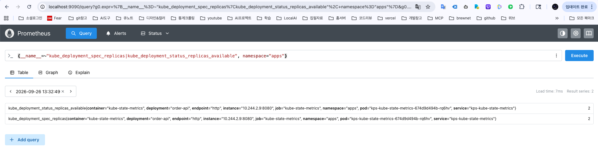
kubectl top과 프로메테우스는 같은 kubelet에서 읽는다
order-api-…-bj8c6 6m 208Mi order-api-…-msnb6 6m 217Mi
15초마다 읽은 최근값 하나. 한 시간 전 값은 조회할 방법이 없다.
{pod="order-api-…-bj8c6"} 208.0
{pod="order-api-…-msnb6"} 217.1
30초마다 수집해 3일치를 쌓는다. 어제 같은 시각과 비교할 수 있다.
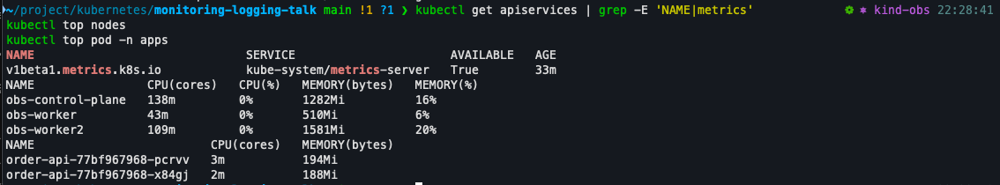
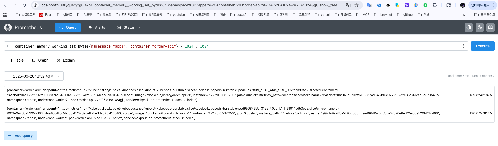
계층별 확인 항목과 메트릭
| 계층 | 확인 항목 | 메트릭 이름 |
|---|---|---|
| ① 노드 | CPU 사용률 | node_cpu_seconds_total |
| 메모리 여유 | node_memory_MemAvailable_bytes | |
| 네트워크 송수신량 | node_network_receive_bytes_total · node_network_transmit_bytes_total | |
| 디스크 여유 공간 | node_filesystem_avail_bytes | |
| ② 클러스터 컴포넌트 | etcd 디스크 쓰기 지연 | etcd_disk_wal_fsync_duration_seconds |
| API 서버 요청 지연 | apiserver_request_duration_seconds | |
| ③ 클러스터 애드온 | 클러스터 오토스케일러: 배치 못 한 파드 | cluster_autoscaler_unschedulable_pods_count |
| 인그레스 컨트롤러: 요청 수 | nginx_ingress_controller_requests (ingress-nginx · 2026-03 유지보수 종료. 대체 구현체마다 이름이 다르다) | |
| ④ 애플리케이션 | 컨테이너 메모리 | container_memory_working_set_bytes |
| 컨테이너 CPU | container_cpu_usage_seconds_total | |
| 컨테이너 네트워크 에러 | container_network_receive_errors_total | |
| 프레임워크 메트릭 (요청 수·지연) | http_server_requests_seconds (Spring Boot) |
메트릭을 모으는 도구와 프로메테우스의 동작 방식
프로메테우스가 대상을 찾아 수집하고 저장하는 구조와, 쿠버네티스에 설치하는 kube-prometheus-stack의 구성을 본다.
용어 ② 프로메테우스 구조
| 용어 | 원어 · 풀 네임 | 뜻 |
|---|---|---|
| 익스포터 | Exporter | 다른 시스템의 상태를 읽어 프로메테우스 형식의 HTTP 주소로 제공하는 프로그램. 예: node-exporter |
| 노출 형식 | Exposition format | 메트릭을 HTTP로 보여 주는 텍스트 형식. # HELP·# TYPE 줄과 이름{라벨} 값 줄 |
| 샘플 | Sample | 저장의 최소 단위. float64 값 하나 + 밀리초 단위 시각 |
| 서비스 디스커버리 | Service discovery | 수집할 대상 목록을 외부(쿠버네티스 API 등)에서 자동으로 받아 오는 기능 |
| Pushgateway | Prometheus Pushgateway | 금방 끝나는 배치 잡이 값을 밀어 넣어 두는 곳. 프로메테우스는 여기서 대신 가져간다 |
| 오퍼레이터 | Operator | 특정 소프트웨어의 설치·설정을 쿠버네티스 리소스로 관리해 주는 컨트롤러 |
| CRD | Custom Resource Definition | 쿠버네티스에 새 리소스 종류를 추가하는 정의. 예: ServiceMonitor |
| ServiceMonitor | ServiceMonitor (CRD) | "라벨이 X인 서비스의 포트 Y에서 수집하라"를 적는 리소스 |
| PrometheusRule | PrometheusRule (CRD) | 알림 규칙과 기록 규칙을 담는 리소스 |
프로메테우스의 라벨에 쿠버네티스 정보가 그대로 붙는다
어디서 보나 브라우저 localhost:9090(Prometheus 화면) → Query 입력칸에 container_memory_working_set_bytes{namespace="apps", container="order-api"}를 넣고 Execute → Table 탭. 파드마다 아래 같은 줄이 하나씩 나온다.
# Table 탭의 한 줄 (라벨 일부) container_memory_working_set_bytes{ namespace="apps", pod="order-api-77bf967968-g247f", container="order-api", node="obs-worker", image="docker.io/library/order-api:v1", job="kubelet", metrics_path="/metrics/cadvisor", instance="172.20.0.2:10250" }
쿠버네티스에서 온 라벨
namespace · pod · container · node. 쿠버네티스에서 쓰던 이름으로 그대로 나눠 본다.
수집 과정에서 붙은 라벨
job(어느 수집 설정인가) · instance(어느 주소에서 수집했나) · metrics_path.
그래서 가능한 질의
"apps 네임스페이스 전체", "obs-worker 노드 위의 컨테이너"처럼 라벨로 골라 합친다.
메트릭 타입 4가지와 각각을 읽는 방법
| 타입 | 값의 성질 | 예 | 읽는 방법 |
|---|---|---|---|
| Counter | 늘기만 한다. 재시작하면 0부터 | node_cpu_seconds_total | rate()로 초당 증가량을 본다 |
| Gauge | 오르내린다. 지금 상태 | node_memory_MemAvailable_bytes | 값을 그대로 본다. rate()를 쓰지 않는다 |
| Histogram | 값을 구간(버킷)별로 센 누적 개수 | http_server_requests_seconds_bucket | histogram_quantile()로 P99 |
| Summary | 앱이 분위수를 미리 계산해 제공 | (order-api는 쓰지 않음) | 파드끼리 평균 내면 틀린 값 |
프로메테우스 서버 안에서 다섯 가지 일이 일어난다
pull 방식은 수집 성공 여부로 대상이 살아 있는지 안다
# 수집에 성공하면 1, 실패하면 0 up{job="order-api", pod="order-api-…-g247f"} 1 up{job="order-api", pod="order-api-…-pjnk8"} 1
얻는 것
대상마다 up 시계열이 자동으로 생긴다. 수집에 실패하면 0이 된다. 요청이 없는 한가한 앱도 /metrics에는 응답하므로 1이다. push 방식에서는 데이터가 안 오면 죽은 건지 한가한 건지 알 수 없다.
대가 ①
프로메테우스가 대상에 네트워크로 닿아야 한다. 방화벽·네트워크 정책이 막으면 수집이 안 된다.
대가 ②
수십 초 만에 끝나는 배치 잡은 수집하러 갈 때 이미 끝나 있다. 이때는 Pushgateway에 값을 남긴다.
대가 ③
30초 간격 샘플이라 요청 하나하나를 세는 과금처럼 100% 정확도가 필요한 용도에는 맞지 않는다.
쿠버네티스 API에서 대상을 찾는 6가지 방법
| 역할 (role) | 무엇을 대상으로 만드나 | 주로 쓰는 곳 |
|---|---|---|
| node | 노드마다 대상 하나 (kubelet 주소) | kubelet · cAdvisor |
| service | 서비스의 포트마다 대상 하나 | 서비스 주소로 외부 점검(블랙박스) |
| pod | 파드의 컨테이너 포트마다 대상 하나 | 서비스 없이 파드에서 직접 수집할 때 (PodMonitor) |
| endpoints | 서비스 뒤의 실제 파드 주소마다 대상 하나 | 서비스로 묶인 앱 (ServiceMonitor 기본값) |
| endpointslice | endpoints와 같고 EndpointSlice API를 쓴다 | endpoints의 후속. 공식 문서가 전환을 권장 |
| ingress | 인그레스의 경로마다 대상 하나 | 외부 URL 점검(블랙박스) |
__meta_kubernetes_* 라벨로 함께 따라온다. 메트릭의 namespace·pod 라벨은 이 정보를 옮겨 붙인 것이다.kube-prometheus-stack 차트 하나로 6가지 구성요소가 뜬다
| 구성요소 | 하는 일 (책 3.7) | 실제 파드 이름 |
|---|---|---|
| 프로메테우스 서버 | 수집한 메트릭을 가져와 저장 | prometheus-kps-kube-prometheus-stack-prometheus-0 |
| 프로메테우스 오퍼레이터 | 프로메테우스·Alertmanager를 쿠버네티스 리소스로 관리 | kps-kube-prometheus-stack-operator-… |
| 노드 익스포터 | 노드의 호스트 메트릭을 제공 | kps-prometheus-node-exporter-… × 3 (노드마다) |
| kube-state-metrics | 쿠버네티스 오브젝트 상태 메트릭 | kps-kube-state-metrics-… |
| Alertmanager | 알림을 받아 외부로 전달 | alertmanager-kps-kube-prometheus-stack-alertmanager-0 |
| Grafana | 메트릭을 대시보드로 시각화 | kps-grafana-… |
-0은 StatefulSet으로 떠 있다는 표시다.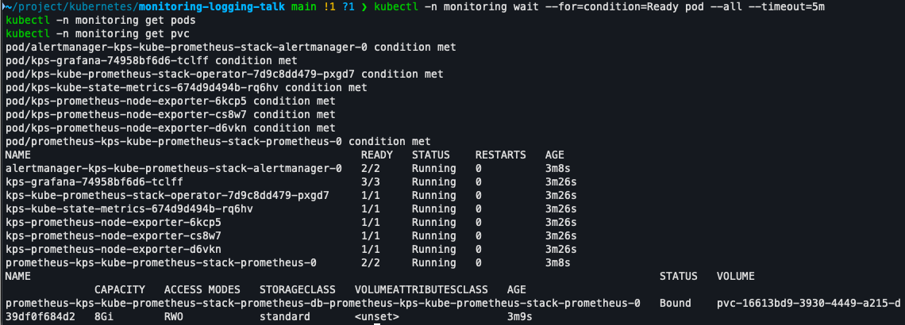
수집 설정을 YAML 리소스로 적으면 오퍼레이터가 설정 파일을 만든다
"라벨 app.kubernetes.io/name=order-api 서비스의 http 포트에서 수집하라"
CRD 변경을 watch 하고 있다
프로메테우스 설정 파일에 잡 추가
설정을 다시 읽고 수집 시작
# 오퍼레이터가 만든 설정 (실측, 일부) - job_name: serviceMonitor/apps/order-api/0 kubernetes_sd_configs: - role: endpoints
| 주요 CRD | 담는 것 |
|---|---|
| Prometheus | 프로메테우스 서버 자체(보존 기간, 자원) |
| ServiceMonitor · PodMonitor | 무엇을 수집할지 |
| PrometheusRule | 알림·기록 규칙 |
| Alertmanager | Alertmanager 서버 자체 |
ServiceMonitor는 세 군데가 맞아야 서비스를 찾는다
ServiceMonitor · 무엇을 수집할지
apiVersion: monitoring.coreos.com/v1 kind: ServiceMonitor metadata: name: order-api namespace: apps labels: release: kps # ① 프로메테우스가 고르는 라벨spec: selector: matchLabels: app.kubernetes.io/name: order-api # ② 서비스 라벨 namespaceSelector: matchNames: [apps] endpoints: - port: http # ③ 서비스 포트 이름 path: /actuator/prometheus interval: 30s scrapeTimeout: 10s
Service · order-api 앞에 있는 서비스
kind: Service metadata: name: order-api namespace: apps labels: app.kubernetes.io/name: order-api # ②spec: ports: - name: http # ③ port: 8080
Prometheus 리소스 · 어떤 ServiceMonitor를 읽을지
spec: serviceMonitorSelector: matchLabels: release: kps # ①
프로메테우스는 찾고, 가져오고, 저장하고, 평가한다
| 질문 | 답 |
|---|---|
| 어떤 도구로 모으나? | 프로메테우스. 라벨 기반 저장이 쿠버네티스 라벨과 같고, 구성요소가 이미 이 형식을 쓴다 |
| 대상을 어떻게 찾나? | 쿠버네티스 API에서 서비스 디스커버리(role: endpoints 등)로 자동 발견 |
| 무엇을 저장하나? | 이름 + 라벨 = 시계열. 샘플 = 값 + 시각. 타입은 counter·gauge·histogram·summary |
| 수집 설정은 누가 쓰나? | ServiceMonitor 리소스를 적으면 오퍼레이터가 설정 파일로 바꾼다 |
스택을 설치하고, 정상인 화면을 읽는다
kube-prometheus-stack을 설치하고 수집 대상 28개가 모두 up인지 확인한다. order-api 메모리 값 하나를 kubectl top · Prometheus · Grafana 세 곳에서 찾아 같은 값인지 비교한다.
용어 설치와 확인에 쓰는 것
| 용어 | 원어 · 풀 네임 | 뜻 |
|---|---|---|
| Helm | Helm (쿠버네티스 패키지 관리자) | 여러 매니페스트를 묶은 패키지를 설치·업그레이드·삭제하는 도구 |
| 차트 | Chart | Helm 패키지. 매니페스트 템플릿과 기본 설정값의 묶음 |
| 릴리스 | Release | 차트를 클러스터에 설치한 한 벌. 이름을 붙인다(여기서는 kps) |
| 값 파일 | Values file | 차트 기본값을 덮어쓰는 설정 파일. -f로 넘긴다 |
| 포트 포워드 | Port forward (kubectl port-forward) | 내 PC의 포트를 클러스터 안 서비스로 이어 주는 임시 터널 |
| PVC | PersistentVolumeClaim | 저장 공간을 달라는 요청서. 파드가 재시작돼도 데이터가 남는다 |
| 타깃 | Target (수집 대상) | 프로메테우스가 수집하는 주소 하나. 상태는 up 또는 down |
| up 메트릭 | up | 타깃마다 하나씩 생기는 시계열. 마지막 수집이 성공하면 1, 실패하면 0 |
| 바인드 주소 | Bind address | 프로그램이 연결을 받는 주소. 127.0.0.1(루프백)이면 자기 노드 안에서만, 0.0.0.0이면 어디서든 접근 가능 |
컨트롤 플레인 메트릭은 클러스터를 만들 때 열어 둔다
kubeadmConfigPatches: - | kind: ClusterConfiguration controllerManager: extraArgs: - {name: bind-address, value: "0.0.0.0"} scheduler: extraArgs: - {name: bind-address, value: "0.0.0.0"} etcd: local: extraArgs: - {name: listen-metrics-urls, value: "http://0.0.0.0:2381"} - | kind: KubeProxyConfiguration metricsBindAddress: "0.0.0.0:10249"
왜 필요한가
kubeadm 기본값은 네 구성요소(컨트롤러 매니저 · 스케줄러 · etcd · kube-proxy)가 메트릭 포트를 127.0.0.1에만 연다. 다른 노드에 있는 프로메테우스는 닿지 못한다.
열면 보이는 것
etcd 디스크 지연(etcd_disk_wal_fsync_duration_seconds), 스케줄 대기(scheduler_pending_pods), 컨트롤러 작업 큐(workqueue_depth). 2장 "컴포넌트" 계층의 메트릭이다.
차트 기본값 대신 보존 기간·저장소·배치를 정한다
labs/helm/kps-values.yaml (일부)
prometheus: prometheusSpec: nodeSelector: {workload: observability} scrapeInterval: 30s retention: 3d retentionSize: 4GB storageSpec: volumeClaimTemplate: spec: resources: {requests: {storage: 8Gi}}grafana: adminPassword: obs-study grafana.ini: plugins: {preinstall_auto_update: false} resources: limits: {memory: 1Gi}
| 값 | 왜 |
|---|---|
| scrapeInterval 30s | 짧을수록 해상도가 오르고 저장량도 오른다. 15초면 같은 기간의 샘플 수가 두 배 |
| retention 3d · 4GB | 둘 중 하나라도 넘으면 오래된 데이터부터 지운다. 며칠 전 장애까지 되짚을지가 이 값 |
| storageSpec 8Gi | 없으면 emptyDir. 파드가 재시작되면 쌓은 메트릭이 전부 사라진다 |
| nodeSelector | 관측 스택을 한 노드에 모은다. 관측 대상 앱이 자원을 다 써 버려도 관측 도구가 같이 느려지지 않게 |
| preinstall_auto_update | Grafana가 기동할 때 내장 플러그인을 업데이트하지 않게 한다 |
| Grafana 메모리 1Gi | 대시보드 몇 개를 열면 850Mi 안팎까지 쓴다(실측) |
따라하기 ①-1 클러스터를 만들고 앱 두 개를 올린다
monitoring-logging/로그인없음메뉴없음. 모두 터미널 명령| # | 명령 | 통과 기준 |
|---|---|---|
| 1 | kind create cluster --config labs/kind-cluster.yaml | 체크 표시 7개, 마지막에 Set kubectl context to "kind-obs" |
| 2 | kubectl apply -f https://github.com/kubernetes-sigs/metrics-server/releases/download/v0.9.0/components.yamlkubectl -n kube-system patch deployment metrics-server --type=json \ -p='[{"op":"add","path":"/spec/template/spec/containers/0/args/-","value":"--kubelet-insecure-tls"}]'kubectl -n kube-system rollout status deployment/metrics-server --timeout=180s | successfully rolled out. 이게 없으면 뒤의 세 출처 확인에서 kubectl top이 실패한다 |
| 3 | docker build -t journal-api:v1 labs/apps/journal-apidocker build -t order-api:v1 labs/apps/order-api | docker images에 journal-api:v1 · order-api:v1 두 줄. 첫 빌드는 수 분 |
| 4 | kind load docker-image journal-api:v1 order-api:v1 --name obs | 오류 없이 끝난다(이미지 2개 × 노드 3대 = 6줄) |
| 5 | kubectl apply -f labs/k8s/journal.yaml -f labs/k8s/order-api.yamlkubectl -n journal rollout status deploy/journal-api --timeout=180skubectl -n apps rollout status deploy/order-api --timeout=240s | successfully rolled out 두 줄. journal-api 3개 · order-api 2개 |
| 6 | kubectl -n apps port-forward svc/order-api 18082:8080 >/dev/null 2>&1 &kubectl -n journal port-forward svc/journal-api 18083:8080 >/dev/null 2>&1 &sleep 2; curl -s localhost:18082/api/orders; echo | {"data":[],"message":"조회 성공",…}. 이 두 port-forward는 5 · 6 · 7장에서 계속 쓰니 끄지 않는다 |
따라하기 ①-2 kube-prometheus-stack 설치
monitoring-logging/로그인없음메뉴없음. 모두 터미널 명령| # | 명령 | 통과 기준 |
|---|---|---|
| 1 | helm repo add prometheus-community https://prometheus-community.github.io/helm-chartshelm repo update prometheus-community | has been added(이미 있으면 already exists), Update Complete |
| 2 | kubectl label node obs-worker2 workload=observabilitykubectl get nodes -L workload | WORKLOAD 열이 obs-worker2에만 observability |
| 3 | helm upgrade --install kps prometheus-community/kube-prometheus-stack \ -n monitoring --create-namespace --version 89.2.2 \ -f labs/helm/kps-values.yaml --wait --timeout 12m | 출력에 STATUS: deployed |
| 4 | kubectl -n monitoring wait --for=condition=Ready pod --all --timeout=5m | condition met 8줄 |
| 5 | kubectl -n monitoring get pods,pvc | 파드 8개 Running(node-exporter 3), PVC 8Gi Bound |
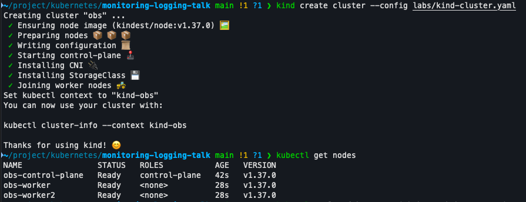
설치 성공의 기준은 타깃 28개가 모두 up인 것
kubectl -n monitoring port-forward svc/kps-kube-prometheus-stack-prometheus 9090:9090 >/dev/null 2>&1 & → 브라우저 http://localhost:9090로그인없음메뉴Status → Target health, 또는 Query 입력칸 → Execute| 묶음 | job | 개수 | 여기서 오는 것 |
|---|---|---|---|
| 노드 · 컨테이너 | kubelet | 9 | 노드 3대 × 경로 3개(/metrics · /metrics/cadvisor · /metrics/probes). cAdvisor 컨테이너 메트릭이 여기서 |
node-exporter | 3 | 노드마다 하나. CPU · 메모리 · 디스크 · 네트워크 | |
| 쿠버네티스 상태 | kube-state-metrics | 1 | 디플로이먼트 · 파드 · 노드 오브젝트의 상태(kube_*) |
| 컨트롤 플레인 | apiserver · kube-controller-manager · kube-scheduler · kube-etcd | 4 | API 요청 · 컨트롤러 큐 · 스케줄 대기 · etcd 디스크 지연 |
kube-proxy · coredns | 3 + 2 | 서비스 규칙 동기화 · DNS 질의 | |
| 스택 자신 | prometheus · alertmanager · operator · grafana | 2+2+1+1 | 관측 도구 자신이 정상 동작하는지 |
count(up), sum(up)을 하나씩 넣고 Execute. 둘 다 28이면 정상. 파드가 Running이어도 타깃이 down이면 그 구성요소의 메트릭은 없다.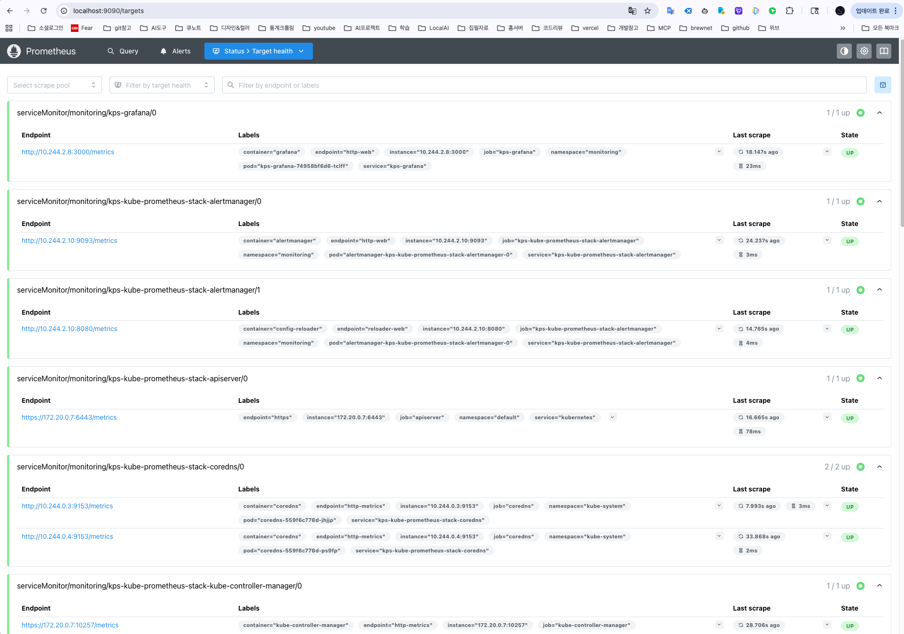
Prometheus 화면은 질문에 따라 메뉴를 고른다
| 메뉴 | 이런 질문일 때 | 사용법 |
|---|---|---|
| Status → Target health | 수집이 되고 있나? 어디가 끊겼나? | 묶음(scrape pool)별 n / n up. 위쪽 두 번째 칸 Filter by target health에서 DOWN을 고르면 끊긴 것만 남는다(선택지는 UNKNOWN · UP · DOWN). DOWN 행에 마지막 에러가 보인다 |
| Query → Table | 지금 값은 얼마인가? | 질의 결과의 최신값 한 줄씩. 라벨 전체가 보여 어느 파드 · 노드인지 확인할 때 |
| Query → Graph | 언제부터 변했나? 추세는? | 시간 범위를 고르고 선으로 본다. rate() · histogram_quantile() 결과를 볼 때 |
| Alerts | 지금 울리는 알림은? | 규칙별 inactive · pending · firing(6장) |
| Status → Rule health | 알림 규칙이 로드됐나? | 규칙 그룹과 평가 상태 · 마지막 평가 시각 |
| Status → Configuration | 실제로 어떤 설정으로 수집하나? | 오퍼레이터가 만든 scrape_configs 전체 |
kubectl -n monitoring port-forward svc/kps-kube-prometheus-stack-prometheus 9090:9090 & → localhost:9090 · 실습 가이드 04 Prometheus 4-1 · 4-2 섹션 참고48/83따라하기 ② 같은 파드를 세 출처로 본다
http://localhost:9090 (port-forward는 정상 상태 확인 때 띄운 것)로그인없음메뉴위쪽 Query 입력칸에 붙여 넣고 Execute → 결과는 Table 탭| # | 명령 · 질의 | 통과 기준 (실측) |
|---|---|---|
| 1 | 터미널: kubectl top pod -n apps | metrics-server: order-api 파드 2개, 메모리 150~200Mi (198Mi · 156Mi) |
| 2 | sum by (pod) (container_memory_working_set_bytes{namespace="apps", container="order-api"}) / 1024 / 1024 | cAdvisor: 같은 파드 2줄, 1번 값과 2MiB 안쪽 차이 (199.1 · 156.5) |
| 3 | sum by (__name__, deployment) ({__name__=~"kube_deployment_spec_replicas|kube_deployment_status_replicas_available", namespace="apps"}) | kube-state-metrics: 두 줄 모두 값 2 (의도 2 · 실제 2) |
| 4 | container_memory_working_set_bytes{namespace="apps", container="order-api"} | 결과 줄마다 라벨 namespace · pod · node · image가 붙어 있다 |
container_로 시작하면 cAdvisor, kube_로 시작하면 kube-state-metrics, kubectl top은 metrics-server. 쓰임새: 지금 값은 kubectl top, 지난 흐름은 cAdvisor, 의도와 실제의 차이는 kube-state-metrics.Grafana 기본 대시보드는 질문별로 하나씩 연다
kubectl -n monitoring port-forward svc/kps-grafana 3000:80 >/dev/null 2>&1 & → http://localhost:3000로그인admin / obs-study메뉴왼쪽 Dashboards → 검색칸에 이름 일부 → 위쪽 선택칸 고르기 → 오른쪽 위 시간 Last 30 minutes| 대시보드 | 이런 질문일 때 | 고를 것 · 볼 패널 |
|---|---|---|
| Kubernetes / Compute Resources / Pod | 이 파드가 자원을 얼마나 쓰나? 한도에 가까운가? | namespace apps, pod order-api-… · Memory Usage (WSS)의 선과 requests · limits 점선, CPU Throttling |
| Kubernetes / Compute Resources / Namespace (Pods) | 네임스페이스 안에서 누가 많이 쓰나? | namespace apps · 파드별 CPU · 메모리 표 |
| Node Exporter / USE Method / Cluster | 클러스터 전체가 모자라나? | CPU · 메모리의 Utilisation(사용률)과 Saturation(포화도) |
| etcd | API가 느린데 저장소 탓인가? | Disk sync duration(WAL fsync), RPC rate |
| Kubernetes / API server | API 서버가 에러를 내나? | Availability, 요청 수 · 에러 · 지연 |
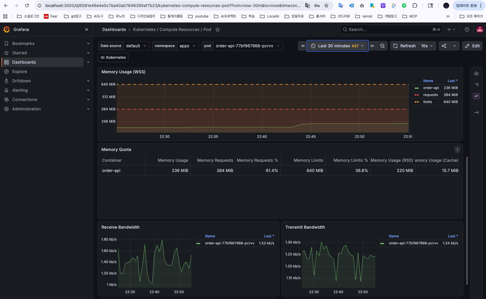
앱을 연결하고 PromQL로 RED를 읽는다
두 앱을 ServiceMonitor로 수집 대상에 올려 타깃 33개가 모두 up인 것을 확인한다. 부하를 넣고 order-api의 P99 790ms를 PromQL로 직접 계산한 뒤, uri로 나눠 느린 경로 /api/chaos/slow 하나를 찾는다.
용어 계측과 질의
| 용어 | 원어 · 풀 네임 | 뜻 |
|---|---|---|
| 계측 | Instrumentation | 앱 코드가 메트릭을 직접 만들어 제공하게 하는 일 |
| Micrometer | Micrometer (JVM 메트릭 라이브러리) | Spring Boot가 쓰는 계측 라이브러리. HTTP 요청 메트릭을 자동으로 만든다 |
| 액추에이터 | Spring Boot Actuator | 운영용 엔드포인트 모음. /actuator/prometheus가 메트릭을 제공한다 |
| prom-client | prom-client (Node.js 라이브러리) | Node 앱에서 프로메테우스 메트릭을 직접 만드는 라이브러리 |
| rate() | PromQL 함수 | 카운터의 초당 증가량. 카운터는 늘기만 하므로 증가 속도가 의미다 |
| histogram_quantile() | PromQL 함수 | 히스토그램 버킷으로 분위수(P50·P99)를 추정한다 |
| le | less than or equal | 히스토그램 버킷의 경계 라벨. le="0.1" = 0.1초 이하 요청 수 |
| 카디널리티 | Cardinality | 메트릭 하나가 만드는 시계열 수. 라벨 값 조합이 늘수록 커진다 |
| k6 | Grafana k6 | 부하 생성 도구. 초당 요청 수를 정해 시나리오를 돌린다 |
앱은 HTTP 엔드포인트로 메트릭을 제공한다
localhost:18082 (order-api). 4장에서 띄운 port-forward가 필요하다살아 있나curl -s localhost:18082/api/orders → {"data":[],"message":"조회 성공",…}꺼졌으면kubectl -n apps port-forward svc/order-api 18082:8080 >/dev/null 2>&1 &// order-api · OrderService.java (일부) Counter.builder("orders.created") .tag("channel", "api").register(registry); Timer.builder("orders.processing") .publishPercentileHistogram().register(registry);
# 엔드포인트에서 이름 확인 curl -s localhost:18082/actuator/prometheus \ | grep -E '^# TYPE (orders|http_server_requests_seconds )' # TYPE http_server_requests_seconds histogram # TYPE orders_total counter # TYPE orders_processing_seconds histogram # TYPE orders_processing_seconds_max gauge # TYPE orders_rejected_total counter # TYPE orders_stored gauge
| order-api | journal-api | |
|---|---|---|
| 언어 | Spring Boot (JVM) | Node.js (Express) |
| 라이브러리 | Micrometer | prom-client |
| 경로 | /actuator/prometheus | /metrics |
| HTTP 메트릭 | 자동 | 코드에서 직접 |
| 공통 이름 | http_server_requests_seconds (히스토그램) | |
# HELP 설명 · # TYPE 타입 · 이름{라벨} 값 줄로 되어 있다. 코드의 orders.created는 orders_total로 나온다.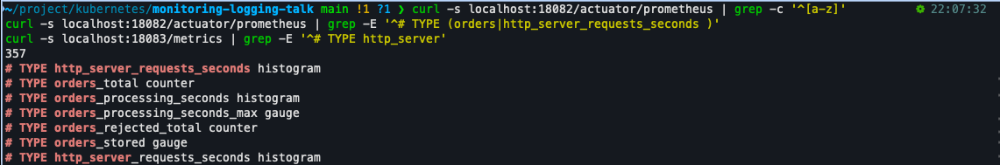
ServiceMonitor에는 세 가지를 맞춘다
apiVersion: monitoring.coreos.com/v1 kind: ServiceMonitor metadata: name: order-api namespace: apps labels: release: kps # ①spec: selector: matchLabels: app.kubernetes.io/name: order-api # ② namespaceSelector: {matchNames: [apps]} endpoints: - port: http # ③ path: /actuator/prometheus interval: 30s
| # | 맞출 상대 | 확인 명령(터미널) → 나와야 할 값 |
|---|---|---|
| ① | Prometheus가 고르는 라벨 | kubectl -n monitoring get prometheus -o jsonpath='{.items[0].spec.serviceMonitorSelector}' → {"matchLabels":{"release":"kps"}} |
| ② | Service의 metadata.labels | kubectl -n apps get svc order-api --show-labels → LABELS에 app.kubernetes.io/name=order-api |
| ③ | Service 포트의 이름 | kubectl -n apps get svc order-api -o jsonpath='{.spec.ports}' → "name":"http" |
serviceMonitor/apps/order-api/0이 나타난다. 하나라도 어긋나면 에러 없이 타깃이 생기지 않는다. 그때는 실습 가이드 Q4의 순서로 찾는다.따라하기 ① 두 앱을 수집 대상에 올린다
http://localhost:9090. 안 열리면 kubectl -n monitoring port-forward svc/kps-kube-prometheus-stack-prometheus 9090:9090 >/dev/null 2>&1 &로그인없음메뉴질의는 위쪽 Query 입력칸에 붙여 넣고 Execute, 결과는 Table 탭| # | 명령 · 화면 | 보이면 통과 |
|---|---|---|
| 1 | kubectl apply -f labs/k8s/servicemonitors.yaml | order-api created · journal-api created 두 줄 |
| 2 | kubectl get servicemonitor -A -l release=kps | grep -E 'apps|journal' | apps order-api · journal journal-api 두 줄 |
| 3 | 1~2분 기다린 뒤 Status → Target health, 위쪽 세 번째 칸 Filter by endpoint or labels에 api (apiserver 줄은 무시) | order-api 2 / 2 up · journal-api 3 / 3 up |
| 4 | Query: count(up), 다음에 sum(up) | 둘 다 33 (기본 타깃 28 + 앱 파드 5) |
| 5 | Query: http_server_requests_seconds_count | job="order-api" 줄과 job="journal-api" 줄이 각각 한 줄 이상 |
| 6 | Status → Configuration, 브라우저 찾기(Cmd-F · Ctrl-F)로 order-api | job_name: serviceMonitor/apps/order-api/0 |
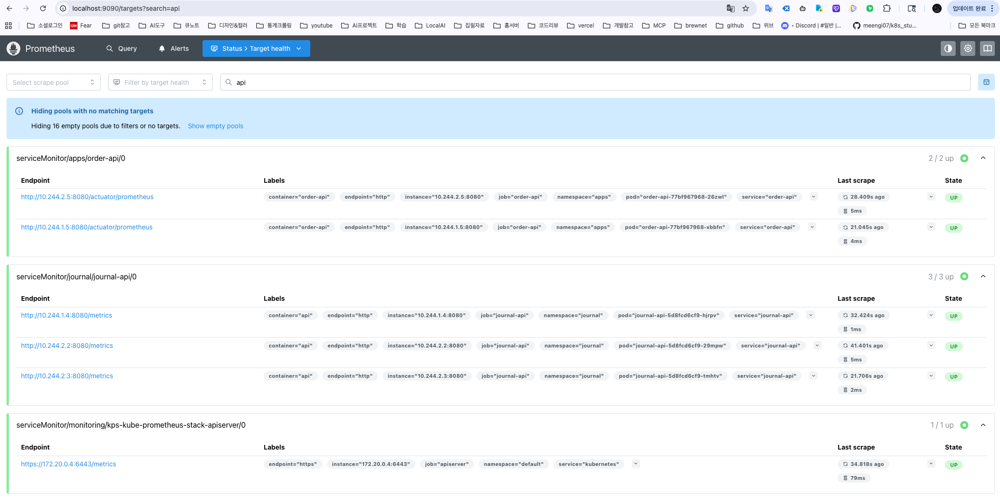
이 장의 질의는 모두 네 가지 모양을 조합한 것이다
localhost:9090(Prometheus) → Query 입력칸 → Execute → Table 탭. 예 칸의 질의를 그대로 넣는다| 모양 | 예 | 언제 쓰나 |
|---|---|---|
| ① 고르기 | http_server_requests_seconds_count{job="order-api", status=~"5.."} | 이름과 라벨로 시계열을 고른다. =~는 정규식 |
| ② 속도 | rate(http_server_requests_seconds_count[5m]) | 카운터(누적)를 초당 값으로. 카운터는 거의 항상 rate로 감싼다 |
| ③ 합치기 | sum by (job) (rate(http_server_requests_seconds_count[5m])) | 파드 여러 개를 앱 단위로. by에 남길 라벨을 적는다 |
| ④ 비율 · 분위수 | sum(rate(http_server_requests_seconds_count{status=~"5.."}[5m])) / sum(rate(http_server_requests_seconds_count[5m]))histogram_quantile(0.99, sum by (le) (rate(http_server_requests_seconds_bucket[5m]))) | 에러 비율, P99. 분위수는 le를 by에 꼭 남긴다 |
따라하기 ② 부하를 넣고 RED를 뽑는다
http://localhost:9090. k6는 앱 포트 18082 · 18083을 쓴다(4장에서 띄운 port-forward)로그인없음메뉴2~5번은 Query 입력칸 → Execute → Table, 6번은 Graph 탭| # | 명령 · 질의 | 보이면 통과 |
|---|---|---|
| 1 | 새 터미널에서 k6 run -e DURATION=15m labs/k6/k6-red.js15분 동안 돈다. 2~6번은 시작 5분 뒤부터, 부하가 도는 동안 친다 | 진행 표시 아래 errors · normal · slow 세 줄. 멈출 때 Ctrl-C |
| 2 | R sum by (job) (rate(http_server_requests_seconds_count[5m])) | order-api ≈ 36 |
| 3 | E sum by (job) (rate(http_server_requests_seconds_count{status=~"5.."}[5m])) / sum by (job) (rate(http_server_requests_seconds_count[5m])) | order-api ≈ 0.06 (6%) |
| 4 | D 평균 sum by (job) (rate(http_server_requests_seconds_sum[5m])) / sum by (job) (rate(http_server_requests_seconds_count[5m])) | order-api ≈ 0.045 (45ms) |
| 5 | D 분위수 histogram_quantile(0.99, sum by (job, le) (rate(http_server_requests_seconds_bucket[5m]))) | order-api ≈ 0.79 (790ms) |
| 6 | 쪼개기 histogram_quantile(0.99, sum by (uri, le) (rate(http_server_requests_seconds_bucket{job="order-api"}[5m]))) | 선 하나(/api/chaos/slow)만 ≈ 0.80, 나머지는 바닥 |
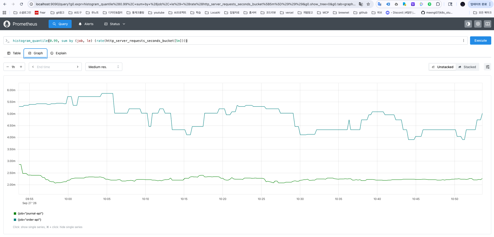
평균 대신 분위수를 보고, 튀면 라벨로 쪼갠다
# order-api, 같은 5분 평균 0.045 # 45ms P50 0.00058 # 0.58ms P95 0.725 # 725ms P99 0.789 # 789ms # P99를 uri로 쪼갠다 /api/chaos/slow 0.805 /actuator/prometheus 0.0178 /actuator/health/** 0.0040 /api/orders 0.0017 /api/chaos/error 0.0014
1. 평균은 없는 요청을 가리킨다
요청 절반은 1ms 안쪽, 상위 5%는 700ms를 넘는다. 45ms 근처의 요청은 거의 없다(1장 "평균의 함정").
2. 분위수로 꼬리를 본다
P50은 요청 절반이 이 시간 안에 끝났다는 뜻, P99는 가장 느린 1%가 이 시간보다 오래 걸렸다는 뜻. 알림과 SLO는 P95 · P99로 건다.
3. 라벨로 쪼개 원인을 좁힌다
sum by (uri, le)로 바꾸자 느린 경로가 하나로 드러난다(0.805초, 나머지는 18ms 이하). 쪼갤 라벨이 계측에 있어야 가능하다.
규칙을 만들고, 알림을 실제로 받는다
RED 질의에 임계값과 지속 시간을 붙여 알림 규칙을 만든다. Alertmanager가 알림을 묶어 수신처로 보내고, 해소되면 다시 알리는 것까지 확인한다. 대시보드는 코드로 넣는다.
용어 ① 알림 규칙
| 용어 | 원어 · 풀 네임 | 뜻 |
|---|---|---|
| 알림 규칙 | Alerting rule | PromQL 조건 + 지속 시간 + 라벨. 프로메테우스가 주기적으로 평가한다 |
| expr | Expression | 알림 조건 질의. 결과가 하나라도 있으면 조건 성립 |
| for | for (지속 시간) | 조건이 이 시간 동안 계속 성립해야 발화한다 |
| pending | Pending (대기) | 조건은 성립했지만 for 시간을 아직 채우지 못한 상태 |
| firing | Firing (발화) | for를 채워 Alertmanager로 보내지는 상태 |
| inactive | Inactive (비활성) | 조건이 성립하지 않는 평상시 상태 |
| severity | Severity (심각도) 라벨 | critical · warning. Alertmanager가 보낼 곳과 억제를 이 라벨로 정한다 |
| annotations | Annotations | 사람이 읽을 요약·설명·런북 링크. {{ $value }}로 현재 값을 넣는다 |
| 런북 | Runbook (책: 플레이북 Playbook) | 알림을 받았을 때 무엇을 확인하고 어떻게 조치할지 적은 문서 |
용어 ② Alertmanager와 SLO
| 용어 | 원어 · 풀 네임 | 뜻 |
|---|---|---|
| 라우트 | Route | 알림 라벨을 보고 어느 수신자로 보낼지 정하는 트리 |
| 수신자 | Receiver | 실제 전송 대상. Slack·메일·PagerDuty·웹훅(Webhook: 지정한 URL로 JSON을 POST) |
| 그룹화 | Grouping (group_by) | 같은 라벨의 알림 여러 개를 하나로 묶어 보낸다 |
| 억제 | Inhibition | critical이 울리는 동안 이름 · 네임스페이스가 같은 warning을 규칙으로 자동으로 누른다 |
| 침묵 | Silence | 사람이 기간을 정해 특정 알림을 끈다. 계획 작업 중에 쓴다 |
| Watchdog | Watchdog 알림 | 늘 발화 상태인 알림. 이것이 멈추면 관측 파이프라인이 죽은 것 |
| 오차 예산 | Error budget | SLO가 허용하는 실패 몫. "99% 성공"이면 1% |
| 소진 속도 | Burn rate | 오차 예산을 평소 대비 몇 배 빠르게 쓰고 있나. 14.4배면 30일 예산이 약 2일에 바닥 |
알림을 받아야 할 사항과 저절로 풀리는 문제
알림을 건다
· SLO에 영향을 주는 증상: 사용자 요청 5%가 실패, 응답 시간이 약속을 넘음
· 관측 자체의 고장: 스크레이프 실패. 이게 죽으면 다른 알림이 모두 침묵한다
알림을 걸지 않는다
· 파드 하나가 실패할 때마다: 쿠버네티스가 스스로 재시작한다
· CPU·메모리가 높을 때: 사용자가 겪지 않으면 할 일이 없다. 원인을 찾을 때 본다
· 경험상 저절로 풀리는 문제
| 사람 대신 자동으로 고칠 수 있는 것 | 자동 조치 |
|---|---|
| 응답 없는 프로세스 | 라이브니스 프로브(liveness probe)가 컨테이너를 재시작 |
| 디스크가 꽉 참 | 오래된 로그를 자동 삭제해 공간 확보 |
규칙은 쿠버네티스 리소스(PrometheusRule)로 넣는다
labs/k8s/prometheusrule.yaml. 규칙 4개를 한 파일에
터미널에서 kubectl apply -f labs/k8s/prometheusrule.yaml
release: kps 라벨이 붙은 것만 골라 Prometheus에 로드
조건이 맞으면 pending → for를 채우면 firing
ServiceMonitor와 같은 방식
수집 대상을 ServiceMonitor로 넣었듯(5장), 알림 규칙은 PrometheusRule로 넣는다. Prometheus 설정 파일을 직접 고치지 않는다. 오퍼레이터가 ruleSelector(여기서는 release: kps)에 맞는 것만 고른다.
들어갔는지 확인하는 곳
Prometheus → Status → Rule health: 그룹 study-app, 규칙 4개 OK
Prometheus → Alerts: 규칙별 inactive · pending · firing
규칙 하나 = 질의 + 임계값 + 지속 시간 + 라벨 + 메시지
apiVersion: monitoring.coreos.com/v1 kind: PrometheusRule metadata: name: study-app-rules namespace: monitoring labels: {release: kps} # ⓪ 오퍼레이터가 고르는 표시 spec: groups: - name: study-app interval: 30s # 평가 주기 rules: - alert: AppHighErrorRate # ① 이름 expr: | # ② 질의 (5장 E) 100 * ( sum by (job) (rate(…_count{status=~"5.."}[5m])) / sum by (job) (rate(…_count[5m])) ) > 5 # ③ 임계값 for: 2m # ④ 지속 시간 labels: severity: warning # ⑤ 누구에게 보낼지 annotations: # ⑥ 메시지 summary: "{{ $labels.job }} 에러율 {{ $value | printf "%.1f" }}%"
| 칸 | 하는 일 |
|---|---|
| ⓪ release: kps | 이 라벨이 있어야 오퍼레이터가 Prometheus에 반영한다 |
| ① alert | 규칙 이름. Alerts 화면과 알림 메시지의 alertname |
| ② expr | 5장에서 쓴 에러율 질의를 그대로 옮기고 ×100(퍼센트) |
| ③ > 5 | 5%를 넘는 job만 결과에 남는다. 남은 줄 하나 = 알림 하나 |
| ④ for | 2분 동안 계속 넘어야 firing. 잠깐 튄 것은 거른다 |
| ⑤ severity | Alertmanager가 이 값으로 수신자를 고른다(warning → 기본, critical → 당직) |
| ⑥ summary | 알림에 들어가는 문장. $labels.job · $value가 채워지고 printf "%.1f"로 소수점 한 자리까지 잘라 "order-api 에러율 5.6%"가 된다 |
이 실습의 규칙 넷: 무엇을 보고, 언제, 누구를 부르나
| 규칙 | 질의 (무엇을 보나) | 임계값 | for | severity | 왜 |
|---|---|---|---|---|---|
| ① AppTargetDown | up{job=~"order-api|journal-api"} == 0 | 0 (수집 실패) | 1m | critical | 관측이 끊기면 다른 알림이 모두 침묵한다 |
| ② AppHighErrorRate | 5xx 비율 × 100 (에러율 질의) | > 5% | 2m | warning | 사용자가 겪는 증상. 낮에 본다 |
| ③ AppHighLatencyP95 | histogram_quantile(0.95, …) (P95 질의) | > 0.5초 | 3m | warning | 느린 요청이 있다 |
| ④ AppSLOFastBurn | 200ms 넘는 요청 비율 (le="0.2" 버킷) | > 14.4% | 2m | critical | 이 속도면 30일 SLO 예산을 2일에 다 쓴다. 새벽에도 깨운다 |
프로메테우스는 판단하고, Alertmanager는 전달한다
30초마다 expr을 계산한다. 조건이 for 동안 이어지면 firing으로 Alertmanager에 보낸다
group_by로 묶고, 억제 · 침묵을 적용하고, 라벨(severity)로 수신자를 고른다
웹훅 · Slack · PagerDuty · 메일. 해소되면 resolved를 한 번 더 보낸다
# kps-values.yaml · alertmanager.config (일부) receivers: - name: study-default webhook_configs: - url: http://alert-sink.monitoring.svc:8080/default send_resolved: true - name: study-critical webhook_configs: - url: http://alert-sink.monitoring.svc:8080/critical send_resolved: true
실습의 수신자
클러스터 안에 작은 웹훅 서버(alert-sink)를 띄운다. 받은 알림을 한 줄씩 로그로 남겨 kubectl logs로 도착을 확인한다.
운영에서는
같은 자리에 slack_configs · pagerduty_configs · email_configs를 쓴다. 규칙과 라우팅은 그대로다.
따라하기 ① 수신자를 띄우고 규칙을 넣는다
localhost:9090 (4장에서 띄운 port-forward) · Alertmanager localhost:9093 (6번에서 띄운다)로그인둘 다 없음시작 조건앞 장 부하가 끝나고 5분 이상 지난 뒤| # | 명령 · 화면 | 볼 것 (기준값) |
|---|---|---|
| 1 | kubectl apply -f labs/k8s/alert-sink.yaml | configmap · deployment · service created 세 줄 |
| 2 | 새 터미널에서 kubectl -n monitoring logs deploy/alert-sink -f (끝나지 않는다. 이 터미널은 그대로 둔다) | alert-sink listening on :8080 |
| 3 | kubectl apply -f labs/k8s/prometheusrule.yaml | prometheusrule.monitoring.coreos.com/study-app-rules created |
| 4 | 1~2분 뒤 브라우저 localhost:9090 → Status → Rule health | 그룹 study-app, 규칙 4개 모두 OK. 막 로드된 직후에는 unknown이 잠깐 보일 수 있다 |
| 5 | 같은 화면 위쪽 메뉴 Alerts | 4개 모두 inactive. pending이면 inactive가 될 때까지 기다린다 |
| 6 | kubectl -n monitoring port-forward svc/kps-kube-prometheus-stack-alertmanager 9093:9093 >/dev/null 2>&1 &브라우저 localhost:9093 → Status | Config의 receivers에 study-default · study-critical 두 개. url 자리는 <secret>으로 가려져 보인다 |
따라하기 ② 부하를 넣고 알림이 도착하는지 본다
localhost:9090 · Alertmanager localhost:9093 · 앱 18082 · 18083 port-forward가 떠 있어야 한다로그인없음터미널① alert-sink 로그(따라하기 ① 2번에서 띄운 것) ② 명령용 ③ k6| # | 하는 일 | 볼 것 |
|---|---|---|
| 1 | 터미널 ③: k6 run -e DURATION=15m labs/k6/k6-red.js | 시작 시각을 적어 둔다. 아래 시간은 이 시각부터 센다 |
| 2 | localhost:9090 → Alerts | 1분 안팎 뒤 AppHighErrorRate · AppHighLatencyP95 PENDING |
| 3 | 같은 화면 | for를 채우면 FIRING. 에러율 약 3분, 지연 약 4분 뒤 (실측 3분 21초 · 4분 21초) |
| 4 | 터미널 ① alert-sink 로그 | FIRING 30초 뒤 [firing] AppHighErrorRate 줄 |
| 5 | localhost:9093 첫 화면 | 목록에 alertname="AppHighErrorRate" 묶음 1개 |
| 부하가 도는 동안 다음 두 장표(SLO 계산, 억제 · 침묵)를 먼저 하고 돌아온다 | ||
| 6 | k6가 끝난 뒤 기다린다 | 5분 뒤 Alerts 모두 inactive, 9분 안에 로그에 [resolved] 두 줄 |
# 터미널 ① 실측 (부하 03:39:23~03:54:24) 03:43:09Z [firing] AppHighErrorRate severity=warning job=order-api receiver=study-default | order-api 에러율 5.6% 03:44:09Z [firing] AppHighLatencyP95 severity=warning job=order-api receiver=study-default | order-api P95 0.73초 # 모두 inactive 03:59:25 (부하 종료 5분 뒤) 03:59:09Z [resolved] AppHighLatencyP95 … | order-api P95 0.72초 04:03:09Z [resolved] AppHighErrorRate … | order-api 에러율 5.4%
P95 알림은 울렸는데 SLO 알림은 울리지 않았다
localhost:9090메뉴Query → 입력칸에 붙여 넣기 → Execute → Table언제따라하기 ②의 15분 부하가 도는 동안# SLO 소진 규칙(AppSLOFastBurn)의 값을 직접 계산 (그대로 붙여 넣는다) 1 - ( sum by (job) (rate(http_server_requests_seconds_bucket{job="order-api", le="0.2"}[5m])) / sum by (job) (rate(http_server_requests_seconds_count{job="order-api"}[5m])) ) # 결과 (실측) {job="order-api"} 0.0560… = 5.6% (임계 14.4%)
계산
SLO: 요청의 99%가 200ms 안에 → 오차 예산 1%. 5분 동안 예산을 14.4배 속도로 쓰면 30일 예산이 약 2일에 바닥난다. 임계 = 14.4 × 1% = 14.4%.
| P95 지연 (AppHighLatencyP95) | SLO 소진 (AppSLOFastBurn) | |
|---|---|---|
| 말하는 것 | 느린 요청이 있다 | 이 속도면 약속을 못 지킨다 |
| 이번 결과 | firing | 5.6% < 14.4%, 울리지 않음 |
| severity | warning (낮에 본다) | critical (새벽에도 깨운다) |
Alertmanager는 묶고, 기다리고, 골라서 보낸다
# kps-values.yaml 의 alertmanager.config (일부) route: group_by: [namespace, alertname] group_wait: 30s group_interval: 5m repeat_interval: 4h receiver: study-default routes: - receiver: "null" matchers: [alertname =~ "InfoInhibitor|Watchdog| NodeClockNotSynchronising"] - receiver: study-critical matchers: [severity = "critical"] inhibit_rules: - source_matchers: [severity = "critical"] target_matchers: [severity =~ "warning|info"] equal: [namespace, alertname]
| 설정 | 뜻 |
|---|---|
| group_by | 같은 네임스페이스 · 같은 알림은 한 덩어리. 파드 10개가 죽어도 알림 하나 |
| group_wait 30s | 첫 알림을 30초 기다려 연달아 터지는 것을 함께 보낸다 |
| group_interval 5m | 같은 그룹에 새 알림이 붙으면 5분 간격으로 다시 보낸다 |
| repeat_interval 4h | 해결되지 않은 알림을 4시간마다 다시 알린다 |
| routes | 위에서부터 맞는 첫 경로로. critical은 당직(study-critical), 나머지는 기본 |
| "null" | 보내지 않을 알림. Watchdog(상시 알림), kind 환경의 시계 경고 |
| inhibit_rules | critical이 울리는 동안 이름 · 네임스페이스가 같은 warning을 숨긴다 |
suppressed, 침묵을 걸면 둘 다 silencedBy=1. 접속은 따라하기 ①에서 띄운 Alertmanager localhost:9093 그대로.대시보드는 UI가 아니라 ConfigMap으로 넣는다
localhost:3000 (4장에서 띄운 port-forward)로그인admin / obs-study메뉴Dashboards → 스터디 → 스터디 — 서비스 RED# 값 파일: Grafana 사이드카 설정 sidecar: dashboards: enabled: true label: grafana_dashboard labelValue: "1" searchNamespace: ALL folderAnnotation: grafana_folder provider: {foldersFromFilesStructure: true}
# 1) 대시보드 JSON → 라벨 · 폴더 붙은 ConfigMap (다시 쳐도 된다) kubectl -n monitoring create configmap study-dashboards \ --from-file=labs/dashboards/study-red.json \ --dry-run=client -o yaml | kubectl apply -f - kubectl -n monitoring label --overwrite configmap study-dashboards grafana_dashboard=1 kubectl -n monitoring annotate --overwrite configmap study-dashboards grafana_folder=스터디 # 2) 20초 뒤 사이드카가 파일로 썼는지 본다 kubectl -n monitoring logs deploy/kps-grafana -c grafana-sc-dashboard --tail=20 | grep study-red # 사이드카 로그 (폴더 이름은 유니코드 이스케이프로 나온다) … "msg": "Writing /tmp/dashboards/\uc2a4\ud130\ub514/study-red.json (ascii)"}
왜 코드로
UI에서 만든 대시보드는 Grafana 파드가 다시 뜨면 사라진다(대시보드용 영구 볼륨 없음). JSON 파일로 두면 저장소에서 버전 관리된다.
uid를 고정한다
study-red. 대시보드 주소(/d/study-red)가 이 값을 쓴다. 바뀌면 북마크와 공유한 링크가 전부 깨진다.
"1"처럼 따옴표로 감싼다. 숫자 1은 라벨 값으로 거부된다.로그를 모으고, LogQL로 원인을 찾는다
파드 로그를 Alloy로 모아 Loki에 쌓는다. order-api 로그에서 500 에러를 세고(실측 634건), 그 634건이 모두 /api/chaos/error 한 경로에서 났다는 것을 LogQL로 확인한다.
용어 ① 로그 수집과 저장
| 용어 | 원어 · 풀 네임 | 뜻 |
|---|---|---|
| 구조화 로그 | Structured logging | 한 줄을 JSON처럼 키·값으로 남기는 방식. 질의할 때 필드를 꺼낼 수 있다 |
| 액세스 로그 | Access log | 웹 서버가 요청마다 한 줄씩 남기는 기록. 경로·상태 코드·처리 시간 |
| 사이드카 로그 전달기 | Sidecar log forwarder | 같은 파드에 붙어 앱의 로그 파일을 읽어 옮기는 컨테이너 |
| 로그 회전 | Log rotation | 로그 파일이 커지면 잘라 새 파일로 바꾸는 것. 오래된 줄은 사라진다 |
| 보존 기간 | Retention period | 저장소가 로그를 지우기 전까지 들고 있는 기간 |
| 톨러레이션 | Toleration | 테인트(taint)가 걸린 노드에도 파드가 뜰 수 있게 하는 설정 |
| SingleBinary | Loki 배포 모드 | Loki의 모든 역할을 프로세스 하나로 돌리는 최소 구성 |
용어 ② LogQL
localhost:3000(Grafana) → Explore → 데이터소스 Loki → 편집기 오른쪽 Code → 질의 입력 → Run query. 직접 쳐 보는 것은 Loki 설치 뒤| 용어 | 원어 · 풀 네임 | 뜻 |
|---|---|---|
| 스트림 셀렉터 | Stream selector | {namespace="apps", app="order-api"}. 라벨로 스트림을 고른다 |
| 줄 필터 | Line filter · |= |~ | 본문에 문자열이 있는 줄만 남긴다. |~는 정규식 |
| 파서 | Parser · | json | pattern | 본문에서 필드를 꺼낸다. json은 JSON 줄, pattern은 고정 형식 줄 |
| __error__ | 파싱 에러 라벨 | 파서가 실패한 줄에 붙는다. | __error__=""로 걸러 낸다 |
| count_over_time | LogQL 함수 | 구간 안의 로그 줄 수. 로그를 시계열처럼 센다 |
| 구조화 메타데이터 | Structured metadata | 라벨 인덱스를 늘리지 않고 줄마다 필드를 붙이는 방식 |
전부 로깅하면 찾기 어렵고 비싸다
| 판단 | 기준 |
|---|---|
| 남긴다 | 나중에 읽을 일이 있는 줄. 요청 경로·상태 코드·처리 시간, 에러와 원인 |
| 남기지 않는다 | 프로브 성공 로그(실패는 이벤트·메트릭에 남는다), "받았다"와 "처리했다" 중복, 정상 응답 본문 |
| 어디로 내보내나 | 파일이 아니라 stdout · stderr. 파일에 쓰면 파드가 지워질 때 같이 사라지고 수집기도 읽지 못한다 |
| 보존 기간 | 30~45일. 지난주 장애를 이번 주에 조사하고 몇 주 전과 비교할 수 있는 길이 |
| 규정상 장기 보관 | 더 저렴한 저장소로 옮겨 보관한다(예: 금융거래기록 5년) |
파드가 지워지면 kubectl logs도 끝이다
monitoring-logging로그인필요 없음메뉴없음 (명령만)# 준비: 30초 동안 로그를 남기고 에러로 종료되는 파드 kubectl create namespace demo kubectl -n demo apply -f labs/k8s/noisy-pod.yaml # ① 실행 중 (8초 뒤) sleep 8; kubectl -n demo logs noisy | tail -1 {"level":"info","msg":"작업 4"} # ② 30초 더 기다려 파드가 Error로 끝난 뒤 sleep 30; kubectl -n demo logs noisy | tail -1 {"level":"error","msg":"마지막에 터졌다"} # ③ 파드를 지운 뒤 kubectl -n demo delete pod noisy kubectl -n demo logs noisy error: error from server (NotFound): pods "noisy" not found in namespace "demo"
| 파드가 지워지는 때 | 얼마나 자주 |
|---|---|
| 롤아웃 | 배포할 때마다 옛 파드가 지워진다 |
| HPA 축소 | 8개에서 3개로 줄면 5개가 사라진다 |
| 노드 비우기(drain) | 파드가 다른 노드로 옮겨진다 |
| OOM 재시작 | 옛 컨테이너 로그는 하나만 남는다 |
| 로그 회전 | 파드가 살아 있어도 오래된 줄은 잘린다 |
kubectl logs는 파드에 붙어 있는 기능이지 로그 저장소가 아니다. 노드·파드와 수명이 분리된 별도 저장소가 필요하다.로깅 도구는 무엇을 색인하나로 비용이 갈린다
| 도구 | 운영 형태 | 저장 · 검색 방식 |
|---|---|---|
| Loki | 설치형 또는 SaaS | 라벨만 색인, 본문은 압축 저장. 싸지만 본문 검색은 스트림을 훑는다 |
| Elastic Stack | 설치형 또는 SaaS | 본문 전체를 색인(전문 검색). 검색이 빠르지만 저장·메모리가 크다 |
| Datadog · Sumo Logic | SaaS | 벤더 저장소. 에이전트가 보낸다 |
| 클라우드 서비스 | 클라우드 관리형 | CloudWatch Logs · Cloud Logging · Azure Monitor Logs |
앱이 요청마다 stdout에 한 줄 남기게 한다
monitoring-logging로그인필요 없음메뉴없음 (명령만). 출력 앞의 Found N pods, using pod/… 안내 줄은 생략journal-api: 요청마다 JSON 한 줄 (코드에 추가)
kubectl -n journal logs deploy/journal-api --tail=1
{"level":"info","msg":"request","method":"GET",
"path":"/api/entries","status":200,"durationMs":1,
"pod":"journal-api-5d8fcd6cf9-29mpw"}
order-api: 코드 수정 없이 환경 변수로 톰캣 액세스 로그를 stdout에
env: - {name: SERVER_TOMCAT_ACCESSLOG_ENABLED, value: "true"} - {name: SERVER_TOMCAT_ACCESSLOG_DIRECTORY, value: /dev} - {name: SERVER_TOMCAT_ACCESSLOG_PREFIX, value: stdout} - {name: SERVER_TOMCAT_ACCESSLOG_SUFFIX, value: ""} - {name: SERVER_TOMCAT_ACCESSLOG_ROTATE, value: "false"}- {name: SERVER_TOMCAT_ACCESSLOG_PATTERN, value: '%h %l %u %t "%r" %s %b %D'} # %D 처리 시간
kubectl -n apps logs deploy/order-api --tail=1
10.244.2.1 - - [27/Sep/2026:02:18:05 +0000] "GET /actuator/health/liveness HTTP/1.1" 200 25 662
Loki는 저장, Alloy는 파드 로그를 읽어 보내는 파이프라인
loki-values.yaml (일부)
deploymentMode: SingleBinary loki: auth_enabled: false commonConfig: {replication_factor: 1} storage: {type: filesystem} schemaConfig: # 없으면 설치 실패 configs: [{store: tsdb, schema: v13, …}] limits_config: allow_structured_metadata: true retention_period: 72h compactor: # 없으면 72h가 지나도 안 지운다 retention_enabled: true delete_request_store: filesystemsingleBinary: persistence: {enabled: true, size: 10Gi}
alloy-values.yaml 파이프라인 네 토막 (일부)
// 1) 파드를 찾는다 discovery.kubernetes "pods" { role = "pod" } // 2) 붙일 라벨을 고른다. 고르지 않은 것은 버려진다 discovery.relabel "pod_logs" { rule { … target_label = "namespace" } rule { … target_label = "pod" } rule { … target_label = "app" } } // 3) 쿠버네티스 API로 로그를 읽는다 loki.source.kubernetes "pods" { … clustering { enabled = true } // Alloy 파드끼리 대상을 나눈다} // 4) Loki로 보낸다 loki.write "default" { endpoint { url = "http://loki-gateway.logging…/loki/api/v1/push" } }
따라하기 ① 설치하고, 로그가 쌓이는지 본다
localhost:3000 (kubectl -n monitoring port-forward svc/kps-grafana 3000:80 >/dev/null 2>&1 &)로그인admin / obs-study메뉴Explore → 데이터소스 Loki → 편집기 오른쪽 Builder/Code 중 Code| # | 명령 · 화면 | 볼 것 (통과 기준) |
|---|---|---|
| 0 | kubectl get nodes -L workload | obs-worker2만 observability. 비어 있으면 가이드 3-1의 kubectl label부터(안 하면 loki-0 Pending) |
| 1 | helm repo add grafana https://grafana.github.io/helm-chartshelm repo update grafana | has been added 또는 already exists, 이어서 Update Complete |
| 2 | helm upgrade --install loki grafana/loki -n logging --create-namespace \--version 7.3.0 -f labs/helm/loki-values.yaml --wait --timeout 10m | STATUS: deployed |
| 3 | helm upgrade --install alloy grafana/alloy -n logging \--version 1.12.1 -f labs/helm/alloy-values.yaml --wait --timeout 8m | STATUS: deployed |
| 4 | kubectl -n logging get pods -o wide | loki-0 · loki-gateway · alloy 2개, 모두 Running |
| 5 | 새 터미널에서 k6 run -e DURATION=15m labs/k6/k6-red.js (앱 port-forward 18082 · 18083 필요, 가이드 2-4) | 진행 표시가 흐르고 오류 줄이 없다. 시작 시각을 적는다 |
| 6 | Code 모드 → Label browser | 라벨 목록에 namespace · app · pod · container |
| 7 | {namespace="apps", app="order-api"} → Run query | 줄마다 "GET /api/… HTTP/1.1" 200 형식, 맨 위가 가장 최근 |
| 8 | k6 시작 5분 뒤. 질의 아래 Options → Type을 Instant로 바꾸고sum by (app) (count_over_time({namespace=~"journal|apps"}[5m])) | 아래 Table에 앱마다 한 줄, 숫자는 Value #A 열. 실측 journal-api 9087 · order-api 10750 (매번 조금씩 다르다) |
LogQL은 좁히고 → 거르고 → 꺼내고 → 센다
| 단계 | 예 | 언제 쓰나 |
|---|---|---|
| ① 좁히기 | {namespace="apps", app="order-api"} | 라벨로 스트림을 고른다. 항상 여기서 시작한다. 색인을 쓰므로 빠르다 |
| ② 거르기 | |= "/api/chaos/error" · |~ " 500 " · != "health" | 본문에 문자열 · 정규식이 있는(없는) 줄만. 파서보다 먼저 두면 빠르다 |
| ③ 꺼내기 | | json · | pattern `<_> <_> <_> [<_>] "<method> <path> <_>" <status> <_> <dur>` | 본문에서 필드를 꺼내 status >= 500처럼 조건을 건다. 뒤에 | __error__="" |
| ④ 세기 | sum by (app) (count_over_time({namespace=~"journal|apps"}[5m])) | 줄 수를 메트릭처럼. 그래프 · 알림에 쓴다 |
{라벨}로 고르고, [5m] 창으로 세고, sum by로 묶는다. 다른 점은 본문을 거르고(②) 꺼내는(③) 단계가 있다는 점이다.따라하기 ② 500 에러가 어느 요청인지 로그에서 찾는다
localhost:3000 · k6 15분 부하가 도는 동안로그인admin / obs-study메뉴Explore → Loki → Code 모드 · 시간 범위 Last 5 minutes · 2 · 3 · 5번은 Options → Type: Instant| # | 질의 (Code 모드에 붙여 넣고 Run query) | 볼 것 (실측) |
|---|---|---|
| 1 | {namespace="apps", app="order-api"} |~ " 500 " | 500 줄만 나오고, 경로가 모두 /api/chaos/error?rate=0.7 |
| 2 | sum by (status) (count_over_time({namespace="apps", app="order-api"} | pattern `<_> <_> <_> [<_>] "<method> <path> <_>" <status> <_> <dur>` [5m])) | status=200 10115 · status=500 634 |
| 3 | sum by (path) (count_over_time({namespace="apps", app="order-api"} | pattern `<_> <_> <_> [<_>] "<method> <path> <_>" <status> <_> <dur>` | status="500" [5m])) | 줄이 하나뿐: /api/chaos/error?rate=0.7 634 |
| 4 | {namespace="journal", app="journal-api"} | json | __error__="" | status >= 200 | 결과 한 줄을 누르면 Fields에 method · path · status · durationMs |
| 5 | sum by (app) (count_over_time({namespace=~"journal|apps"} | json | __error__="" [5m])) | 줄이 journal-api 하나뿐 (9084) |
| __error__=""를 빼면 JSONParserErr로 질의가 실패한다: Q&A Q8 · 실습 가이드 10 로그 10-5 섹션 참고82/83실습이 끝나면 부하 · 포트 · 클러스터를 정리한다
monitoring-logging로그인필요 없음메뉴없음 (명령만)| # | 명령 | 볼 것 (통과 기준) |
|---|---|---|
| 1 | k6가 아직 돌고 있으면 그 터미널에서 Ctrl-C. 또는pkill -f k6-red | k6 터미널에 프롬프트가 돌아온다 |
| 2 | pkill -f 'kubectl.*port-forward' | 출력 없음 |
| 3 | pgrep -fl 'k6|port-forward' || echo "없음" | 없음 한 줄. 백그라운드 프로세스가 모두 멈췄다 |
| 4 | kubectl delete namespace demo --ignore-not-found | namespace "demo" deleted (이미 지웠으면 출력 없음) |
| 5 | 클러스터를 통째로 지울 때만: kind delete cluster --name obs | Deleted nodes: ["obs-control-plane" "obs-worker" "obs-worker2"] (노드 순서는 실행마다 다르다) |